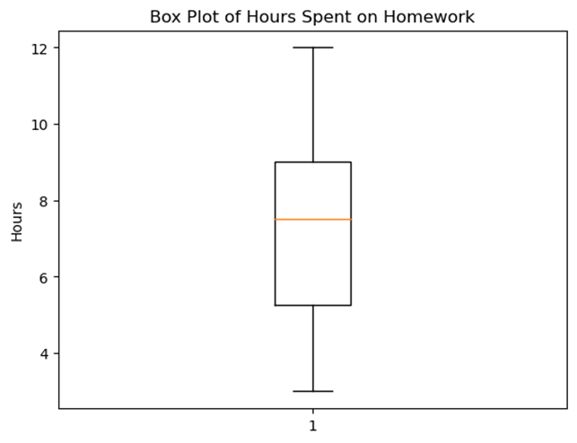
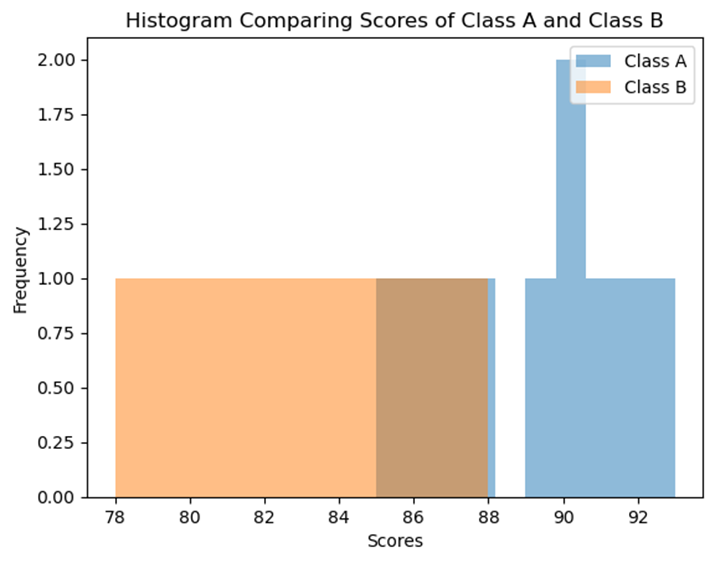
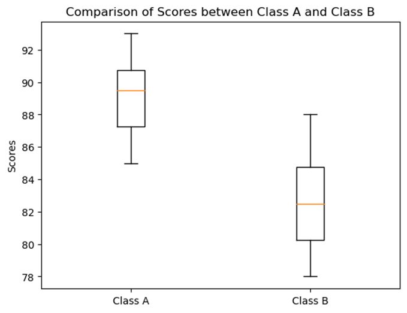
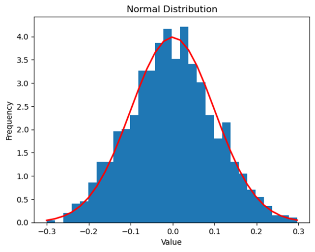
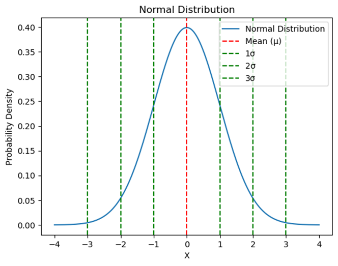
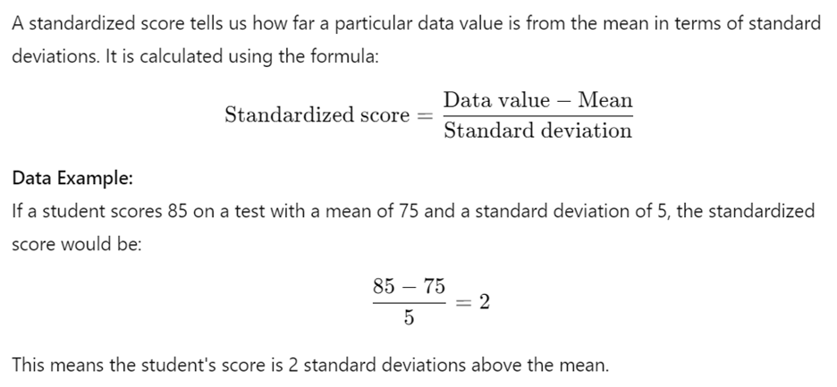

Unit 1 - Exploring One-Variable Data (Part 3)
This part covers the following topics:
Topic 1.8 Graphical Representations of Summary Statistics
Topic 1.9 Comparing Distributions of a Quantitative Variable
Topic 1.10 The Normal Distribution
1. Graphical Representations and Key Features of Data
Explanation:
Graphical representations like histograms, boxplots, and dot plots help us
visualize data, making it easier to identify patterns, trends, and key
features. These visual tools allow us to see the shape, center, spread, and any
unusual features like outliers.
Data
Example:
Consider a dataset showing the number of hours 10 students spent on homework
last week:
[3, 4, 5, 6, 7, 8, 9, 9, 10, 12]
We can represent this data using a histogram or a boxplot to quickly see where most students spent their time.

Real-World
Example:
Imagine you're looking at the test scores of your class. A histogram could show
you how many students scored within certain ranges, like 70-79, 80-89, and so
on. This helps you see the overall performance at a glance.
2. The Five-Number Summary
Explanation:
The five-number summary is a set of descriptive statistics that provides a
quick overview of a dataset. It includes:
Data
Example:
For the homework hours data [3, 4, 5, 6,
7, 8, 9, 9, 10, 12], the five-number
summary is:
3. Boxplot: A Visual of the Five-Number Summary
Explanation:
A boxplot (or box-and-whisker plot) is a graphical representation of the
five-number summary. It shows the distribution of the data, highlighting the
middle 50% (the "box") and the spread of the data (the
"whiskers").
Graph: Boxplot Example
Here's a boxplot for the homework hours data:
Real-World
Example:
Boxplots are often used in finance to compare the performance of different
stocks. For example, comparing the returns of various stocks over a month can
show which stock has the most consistent performance (small IQR) and which has
outliers (sudden high or low returns).
4. Summary Statistics to Justify Claims
Explanation:
Summary statistics, like the five-number summary, mean, and standard deviation,
provide a way to describe data concisely. They help us make informed claims
about the data. For example, if the median test score is 85, you can claim that
more than half the students scored 85 or higher.
Data
Example:
If a class has the following test scores [70,
75, 80, 85, 90, 95, 100], you can use the
median (85) and mean (85) to summarize the data and make claims about overall
performance.
5. Understanding the Shape of Distributions
Explanation:
The shape of a distribution tells us how data is spread out. There are three
main types of distributions:
Graph: Distribution Shapes
Real-World
Example:
Income distribution in a country is often skewed right because most people earn
a moderate income, but a few people earn very high incomes, pulling the mean to
the right.
Free Response Problem
Problem:
A group of students recorded the time they spent studying for an exam (in
hours) as follows: [2, 3, 5, 7, 7, 9, 10,
14, 18, 20].
Hint:
Calculate the mean and compare it to the median to determine if the data is
symmetric, skewed right, or skewed left.
1. Identifying Key Features of Data with Graphs
Explanation:
When you look at a dataset, it might just seem like a bunch of numbers. But by using graphical representations like histograms, boxplots, or scatterplots, you can turn those numbers into something visual and meaningful. These graphs help you see the "big picture" and identify key features of the data, such as the central value (center), how spread out the data is (variability), whether there are any unusual points (outliers), and if the data forms any patterns (clusters).
Data Example:
Imagine we have test scores from two different classes:
By plotting these scores in a histogram, you can quickly see how the scores are distributed and identify the center (most common score), variability (how spread out the scores are), and any potential outliers.
Graph:
Let's generate a histogram comparing the test scores from Class A and Class B.
(Note: This histogram will show the distribution of test scores, helping us visualize and compare the two classes.)

2. Comparing Independent Samples Using Graphs
Explanation:
When you have two or more independent samples (like two different classes), graphical representations such as side-by-side boxplots or histograms can help you compare them. You can analyze the center (which sample has a higher median?), variability (which sample has more spread?), and other features like clusters, gaps, and outliers.
Data Example:
Let s use the test scores from Class A and Class B again:
A side-by-side boxplot will show the median (center), the range (variability), and any outliers in the data.
Graph:

3. Comparing Independent Samples Using Numerical Summaries
Explanation:
Graphs are great, but numbers tell a story too! Numerical summaries like the mean (average), standard deviation (a measure of spread), and relative frequency (how often something happens compared to the total) can be used to compare different samples. For instance, you can compare the average test scores between two classes or see which class has more variability in scores.
Data Example:
From these numbers, you can see that Class A has a higher average score but less variability, while Class B has more variability in scores.
Real-World Example:
Comparing Average Monthly Temperatures:
Let s say you re comparing the average monthly temperatures of two cities over a year. City A has an average temperature of 70 F with a standard deviation of 5 F, while City B has an average of 65 F with a standard deviation of 8 F.
Free Response Problem:
Problem:
You are given the heights (in inches) of students in two different classes:
Hint: Consider the center, variability, and any potential outliers when writing your comparison.
This reading material provides a comprehensive understanding of how to use graphs and numerical summaries to represent and compare data. By working through the real-world example and free response problem, you ll practice these skills and be better prepared for your AP Statistics exam.
1. Normal Distribution: A Model for Population Distributions
The normal distribution, often called the "bell curve," is a way to describe how data is spread out in a population. In many situations, data follows a pattern where most values cluster around the mean, and fewer values are found as you move further away from the mean.

Data Example: Consider the heights of students in your school. If we were to plot the heights on a graph, we might see that most students have heights around the average, with fewer students being much shorter or taller. This creates a bell-shaped curve that is symmetric around the mean height.
Real-World Example: Think about the weights of apples in a large orchard. Most apples will have a weight close to the average, but some will be much lighter or heavier. If we plotted the weights, it would likely form a normal distribution.
2. Parameters: Summarizing a Population
A parameter is a numerical value that describes some aspect of a population. For example, the population mean (denoted as μ) tells us the average value in a population, while the population standard deviation (σ) tells us how spread out the data is.
Data Example: If we calculate the average height (mean) and the variation in heights (standard deviation) of all students in the school, those numbers are the parameters of the population of students.
3. Approximately Normal Distributions
Not all data sets are perfectly normal, but many can be described as "approximately normal." A normal curve is mound-shaped and symmetric, with its peak at the mean.
Data Example: The distribution of test scores in a large class might not be perfectly normal, but it could be approximately normal, especially if most students score near the average with fewer getting very low or very high scores.
Graph Example: Below is a graph of an approximately normal distribution. Notice how the curve is symmetric and bell-shaped.

4. The Empirical Rule: Predicting Data Spread
The empirical rule helps us understand how data is spread out in a normal distribution:
Data Example: If the mean height of students is 160 cm with a standard deviation of 10 cm:
Graph Example: Below is a graph illustrating the empirical rule on a normal distribution.
5. Variables Modeled by a Normal Distribution
Many variables in the real world can be modeled by a normal distribution. This includes things like test scores, heights, and even times to complete a task.
Data Example: Consider the time it takes for students to complete a math problem. If we measure the time for each student and plot it, we might see a normal distribution where most students take around the same time, with fewer students taking much longer or shorter times.
6. Standardized Scores: Understanding Relative Position

7. Z-Scores: A Common Standardized Score
A z-score is a specific type of standardized score that follows the same calculation. It helps compare data points from different distributions by standardizing them.
Data Example: In the previous example, the z-score of 2 means the student s score is 2 standard deviations above the mean. This is useful for comparing their score to others, regardless of the test.
8. Using Technology to Find Proportions in a Normal Distribution
Technology, such as calculators, can help us find the proportion of data values within a specific range in a normal distribution. This is useful when we need to find out how much of the data falls below or above a certain value.
Data Example: If we want to know what proportion of students scored below 85 on a test with a mean of 75 and a standard deviation of 5, we can use a calculator or standard normal table to find that proportion.
9. Estimating Parameters Using Technology
Given the area under the normal curve, we can use technology to estimate parameters like the mean or standard deviation of a population. This is particularly helpful when we know the distribution shape but need to find specific values.
10. Percentiles and Z-Scores for Comparison
Percentiles and z-scores allow us to compare the relative positions of data points. For example, a score in the 90th percentile means the score is higher than 90% of all other scores.
Data Example: If a student s test score is in the 90th percentile, it means they performed better than 90% of their classmates.
Free Response Problem:
A class of 200 students took a math test. The test scores are approximately normally distributed with a mean of 70 and a standard deviation of 8.
Questions:
Use the empirical rule and z-scores to solve these problems. You may also use a calculator or standard normal table for more precise answers.
This reading material is designed to give you a solid foundation in understanding normal distribution and related concepts. Keep practicing with examples and problems to strengthen your grasp of these ideas!